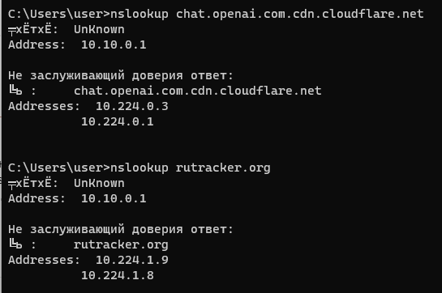

Приветствую! 
Кто-нибудь смог снять блокировку ChatGPT с помощью Антизапрета на своем сервере? Попробовал прописать в include-hosts-custom.txt список доменов, запрашиваемых в браузере при входе на https://chat.openai.com/, теперь удается дойти до аутентификации, но после ввода имени и пароля при входе всё равно выдается ошибка, что в вашей стране chatgpt не работает. Если включить VPN непосредственно на клиенте, то их сайт работает нормально.
Может что-то еще нужно добавить в include-hosts-custom.txt? Каким образом они определяют страну?
Мой include-hosts-custom.txt прилагаю.
include-hosts-custom.txt (866 байтов)
.
А сервер сам может пройти дальше аутентификации? Может быть что сам сервер не может дальше пройти.
В include-hosts-custom.txt у себя поставил только openai.com есть. Нормально заходит и работает.
У меня антизапрет поднят на домашнем сервере, который через впн думает что он где-то в латвии. Сделал так потому что в месяц как оказывается не более 20-25 гигов заблокированного контента потребляю. Брать для столь малого трафика впс-ку как-то жирно считаю.
Откройте F12 → сеть, нажмите кнопку входа и посмотрите, на какой домен отправляется запрос. Его и добавьте в лист.
Да, так и сделал список доменов, вроде все включил в include-hosts-custom.txt - довольно длинный получился, но все равно chat.openai.com как-то определяет страну.
Но раньше (без этого include-hosts-custom.txt) ошибку выдавал сразу еще до аутентификации (раньше текст ошибки содержал даже ip адрес), то сейчас уже запрашивает имя-пароль, а потом только ругается на страну (и текст ошибки другой, без упоминания ip).
Если на клиенте поднять vpn - то да, работает без проблем
Похожая была проблема ранее, но решал так. Авторизовался с полноценным vpn, потом его вырубал оставляя antizapret, в котором указывал конкретные хосты. Сегодня же (15.11.23) они ввели какую-то доп блокировку. При вхоже пишет “oops. какая-то ошибка” и все. Я сначала подумал, что сам GPT лежит, но нет. Зашел через VPN, а там все ок. Стал записывать весь http трафик через fiddler и добавил все в include-hosts-custom.txt, но вообще не помогло. Я уже не знаю, куда копать. Подозреваю, что они добавили какой-то js скрипт, который отправляет не через http данные от клиента к ним на проверку, а как-то иначе. Надо будет через wireshark посмотреть…
А так, вот мой файлик
include-hosts-custom.txt (1,3 КБ)
Я у себя обнаружил, что длинные хосты из файла include-hosts-custom.txt, похоже не перенаправляются через свой DNS. Например, nslookup chat.openai.com.cdn.cloudflare.net возвращает “родные” ip-шники.
Есть какое-то ограничение по длине хоста?
Да нет, вроде бы корректно отрабатывает

Странно, у меня вот так:
{kind=link}
Кеш в контейнере сбрасывал? doall.sh запускал? Патчи ставил?
Только doall.sh запускал, отработал без ошибок. А как сбросить кеш в контейнере и установить патчи?
В контейнере проделай следующее:
apt update
apt upgrade
apt install socat -y
apt -y remove python3-dnslib && apt -y install python3-pip && pip3 install dnslib
wget https://ntc.party/uploads/short-url/qcZkhfK3hMdQtOGLD64orMd810D.patch -O /root/dnsmap/p.patch
cd /root/dnsmap
patch -i p.patch
Затем поправь строку в /root/antizapret/parse.sh:
nano /root/antizapret/parse.sh
awk -F ‘;’ ‘{print $2}’ temp/list.csv | sort -u | awk ‘/^$/ {next} /\/ {next} /[1]*+$/ {gsub(/*./, “”); gsub(/.$/, “”); print}’ | grep -Fv ‘bеllonа’ | CHARSET=UTF-8 idn > result/hostlist_original.txt
Ну и после уже doall.sh:
LANG=C.UTF-8 /root/antizapret/doall.sh
И сброс кеша:
echo “cache.clear()” | socat - /run/knot-resolver/control/1
После всего проделанного должно нормально маршрутизироваться
а-яА-Яa-zA-Z0-9-_.* ↩︎
Спасибо, буду пробовать!
Ну и после каждого добавления новых хостов лучше делать doall и сброс кеша
Выяснил, в чем была проблемка. И она несколько нетривиальна… В общем, проблема оказалась в самом провайдере VPS, а конкретно AdminVPS. Сервак хоть и находится в Нидерландах, и даже по IP определяется там, но вот сам IP (5.253.6**.***) считается, что относится к RU региону (можно глянуть списки принадлежности масок адресов). Решил ради интереса сменить провайдера на Fornex (да, там дороже, но IP норм) и о чудо, в chatGPT зашло без каких-либо проблем!
Интересно, а есть сервис, который позволяет определить по IP-адресу страну не фактического нахождения сервера, а именно как этот айпишник воспринимают OpenAI, Bing, Google и пр.?
Я как-то обратил внимание, когда регистрировал новый аккаунт в гугл под одним турецким VPN, что сайт гугла неожиданно сам переключался на русский язык, хотя у меня была чистая виртуалка с английским Windows, IP изначально шёл с роутера турецкий, номер телефона не вводил. Попробовал потом под другим турецким VPN - интерфейс переключился на турецкий язык 
У гугла из списка геолокация/DNS/GeoIP последний имеет самый низкий приоритет.
Если то-то (возможно не вы, а другой пользователь публичного VPN) пользовался
адресом на смартфоне с включенной геолокацией или DNS-запросы приходили из другой страны, то адрес примерно на неделю сменит локацию. Затем несколько дней будет в состоянии “не определено”, после чего опять вернется к GeoIP.
Спасибо. Значит придется свой VPS арендовать с впн и не выходить на него с телефона с геолокацией
Тоже столкнулся с проблемой невозможности добавить свои хосты. Накатил все обновления и патчи, но получил следующее:
{kind=link}
{kind=link}
на кавычки посмотрите. хз как они оказались тут, походу копировали из ворда, консоль никогда такие не принимала. замените вручную на нормальные
Удалось настроить перенаправление на ChatGPT?
{kind=link}
подскажите, а почему так?
google, серьезно
apt install socat -y
спасибо
я думал проблема в синтаксисе опять, как в случае с кавычками. Я линуксоид третий день)
Со вчерашнего дня перестло работать, там где было залогинено интерфейс на половину пустой и не дает отправлять сообщения, если скинуть куки - то грузится первая страница, но ни “логин” ни “сайнап” не нажимаются. Как через VPS, так и через публичный протон. У всех такая штука?
У меня да, ошибки JS в консоли.
Пока можно пользоватся Mistral AI, вроде бы не хуже.
Работает корректно. Но если не заходить ~ сутки, интерфейс раскорячивает, примерно как вы говорите. Помогает CTRL+F5 для того что бы появилась капча Cloudflare. После этого становится рабочий интерфейс.
Перепроверил, у меня в chromium based браузерах работает, в firefox based не работает работает в LibreWolf.
Да, было такое, сейчас тоже можно добиться появления чекбокса Cloudflare, но после него тишина. На мобильном FF такая же проблема, на Chrome работает. Вероятно, когда видит сомнительные диапазоны IP запускает какую-то доп. проверку, которая перестала отрабатывать в FF.